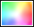

<div class="modal-header">
    <h3 class="modal-title" id="modal-title">评委信息</h3>
</div>
<form name="editForm" class="competition-judge-config-add judge-config-add" ng-submit="vm.save()">
<div class="modal-body" id="modal-body">
    <div class="form-group">
        <label for="">评委姓名</label>
        <input type="text" class="form-control search-input" ng-model="vm.search" placeholder="请输入评委姓名">
        <button class="btn fr search-btn" type="button" ng-click="vm.searchJudges()">搜索</button>
    </div>

    <div class="scroll-control">
        <table class="table">
            <tbody>
            <tr>
                <th>评委ID</th>
                <th>评委姓名</th>
            </tr>
            <tr ng-repeat="judge in vm.judges track by judge.id">
                <td>{{ judge.id }}</td>
                <!--<td>{{ judge.login }}</td>-->
                <td>{{ judge.username }}</td>
                <td class="tx-align-r">
                    <div role="group" class="btn-group">
                        <button class="btn btn-edit" type="button" ng-click="vm.judgeSelected(judge)">
                            <span class="glyphicon glyphicon-pencil"></span>
                            <span>选择</span>
                        </button>
                    </div>
                </td>
            </tr>
            </tbody>

        </table>
    </div>
<div class="selected-judge-part">
    <label for="">评委姓名</label>
    <input type="text" class="form-control" ng-model="vm.judge.userName" required ng-disabled="true">
</div>
    <div class="row color-number-edit">
    <div class="color-picker-part col-sm-6">
        <label for="" class="control-label cl-sm-4">标识颜色</label>
        <div class="colopicker-wrapper" ng-click="openColorPicker()">
            <div style="background-color: {{vm.judge.colorFlag}};" class="colopicker-body">
                
            </div>
            <input colorpicker="hex" type="text" ng-model="vm.judge.colorFlag" ng-click="flag = false;" class="hidden-colorpicker" required />
        </div>
    </div>

    <div class="form-group col-sm-6 works-nmuber">
        <label for="" class="col-sm-4 control-label">作品数量</label>
        <div class="col-sm-8 works-number-input pl-0">
            <input type="number" ng-model="vm.judge.pollNum" class="form-control" ng-disabled="bool" ng-init="0">
        </div>
    </div></div>

</div>
<div class="modal-footer">
    <button class="btn btn-warning" type="button" ng-click="cancel()">取消</button>
    <button class="btn btn-primary" type="submit" ng-disabled="editForm.$invalid">保存</button>
</div>
</form>
